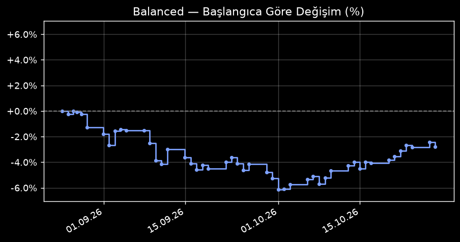

| Sembol | Giriş | Güncel | Stop | K/Z | |
|---|---|---|---|---|---|
| AES | $14.73 | $15.05 | $14.95 | +2.21% | ▸ |
Alım tarihi 26.08.2026 19:24 UTC Açık süre 64 gün 6 saat Adet 3 Ortalama alım fiyatı $14.73 Pozisyon büyüklüğü (maliyet) $44.18 Güncel fiyat $15.05 Güncel K/Z +0.97$ (+2.21%) Stop seviyesi $14.95 Stop'a uzaklık 0.65% Alım gerekçesi
Bu sembolde önceki kapanmış işlemler
| |||||
| APA | $42.30 | $51.51 | $48.81 | +21.77% | ▸ |
Alım tarihi 22.09.2026 20:22 UTC Açık süre 37 gün 5 saat Adet 8 Ortalama alım fiyatı $42.30 Pozisyon büyüklüğü (maliyet) $338.40 Güncel fiyat $51.51 Güncel K/Z +73.68$ (+21.77%) Stop seviyesi $48.81 Stop'a uzaklık 5.23% Alım gerekçesi
Bu sembolde önceki kapanmış işlemler
| |||||
| KDP | $30.69 | $35.30 | $33.80 | +15.02% | ▸ |
Alım tarihi 01.10.2026 21:55 UTC Açık süre 28 gün 4 saat Adet 6 Ortalama alım fiyatı $30.69 Pozisyon büyüklüğü (maliyet) $184.14 Güncel fiyat $35.30 Güncel K/Z +27.66$ (+15.02%) Stop seviyesi $33.80 Stop'a uzaklık 4.26% Alım gerekçesi
Bu sembolde önceki kapanmış işlemler
| |||||
| LYV | $166.85 | $177.83 | $170.21 | +6.58% | ▸ |
Alım tarihi 01.10.2026 21:55 UTC Açık süre 28 gün 4 saat Adet 1 Ortalama alım fiyatı $166.85 Pozisyon büyüklüğü (maliyet) $166.85 Güncel fiyat $177.83 Güncel K/Z +10.98$ (+6.58%) Stop seviyesi $170.21 Stop'a uzaklık 4.28% Alım gerekçesi
Bu sembolde önceki kapanmış işlemler
| |||||
| IFF | $82.42 | $90.81 | $90.50 | +10.18% | ▸ |
Alım tarihi 02.10.2026 21:25 UTC Açık süre 27 gün 4 saat Adet 2 Ortalama alım fiyatı $82.42 Pozisyon büyüklüğü (maliyet) $164.84 Güncel fiyat $90.81 Güncel K/Z +16.78$ (+10.18%) Stop seviyesi $90.50 Stop'a uzaklık 0.34% Alım gerekçesi
Bu sembolde önceki kapanmış işlemler
| |||||
| FAST | $51.43 | $52.55 | $49.70 | +2.18% | ▸ |
Alım tarihi 13.10.2026 21:56 UTC Açık süre 16 gün 4 saat Adet 11 Ortalama alım fiyatı $51.43 Pozisyon büyüklüğü (maliyet) $565.73 Güncel fiyat $52.55 Güncel K/Z +12.32$ (+2.18%) Stop seviyesi $49.70 Stop'a uzaklık 5.43% Alım gerekçesi
Bu sembolde önceki kapanmış işlemler
| |||||
| ADI | $395.44 | $433.28 | $404.33 | +9.57% | ▸ |
Alım tarihi 16.10.2026 20:02 UTC Açık süre 13 gün 6 saat Adet 2 Ortalama alım fiyatı $395.44 Pozisyon büyüklüğü (maliyet) $790.88 Güncel fiyat $433.28 Güncel K/Z +75.68$ (+9.57%) Stop seviyesi $404.33 Stop'a uzaklık 6.68% Alım gerekçesi
Bu sembolde önceki kapanmış işlemler
| |||||
| DDOG | $260.36 | $265.84 | $249.41 | +2.10% | ▸ |
Alım tarihi 19.10.2026 21:40 UTC Açık süre 10 gün 4 saat Adet 2 Ortalama alım fiyatı $260.36 Pozisyon büyüklüğü (maliyet) $520.72 Güncel fiyat $265.84 Güncel K/Z +10.96$ (+2.10%) Stop seviyesi $249.41 Stop'a uzaklık 6.18% Alım gerekçesi
Bu sembolde önceki kapanmış işlemler
| |||||
| GPC | $123.52 | $122.39 | $120.58 | -0.91% | ▸ |
Alım tarihi 20.10.2026 20:48 UTC Açık süre 9 gün 5 saat Adet 5 Ortalama alım fiyatı $123.52 Pozisyon büyüklüğü (maliyet) $617.60 Güncel fiyat $122.39 Güncel K/Z -5.65$ (-0.91%) Stop seviyesi $120.58 Stop'a uzaklık 1.48% Alım gerekçesi
Bu sembolde önceki kapanmış işlemler
| |||||
| CF | $116.30 | $118.09 | $113.50 | +1.54% | ▸ |
Alım tarihi 21.10.2026 20:49 UTC Açık süre 8 gün 5 saat Adet 5 Ortalama alım fiyatı $116.30 Pozisyon büyüklüğü (maliyet) $581.50 Güncel fiyat $118.09 Güncel K/Z +8.95$ (+1.54%) Stop seviyesi $113.50 Stop'a uzaklık 3.89% Alım gerekçesi
Bu sembolde önceki kapanmış işlemler
| |||||
| DVA | $176.81 | $193.31 | $180.25 | +9.33% | ▸ |
Alım tarihi 21.10.2026 20:49 UTC Açık süre 8 gün 5 saat Adet 2 Ortalama alım fiyatı $176.81 Pozisyon büyüklüğü (maliyet) $353.62 Güncel fiyat $193.31 Güncel K/Z +33.00$ (+9.33%) Stop seviyesi $180.25 Stop'a uzaklık 6.76% Alım gerekçesi
Bu sembolde önceki kapanmış işlemler
| |||||
| GM | $80.54 | $85.72 | $80.18 | +6.43% | ▸ |
Alım tarihi 27.10.2026 21:26 UTC Açık süre 2 gün 4 saat Adet 10 Ortalama alım fiyatı $80.54 Pozisyon büyüklüğü (maliyet) $805.40 Güncel fiyat $85.72 Güncel K/Z +51.80$ (+6.43%) Stop seviyesi $80.18 Stop'a uzaklık 6.46% Alım gerekçesi
Bu sembolde önceki kapanmış işlemler
| |||||
| GPN | $81.43 | $85.72 | $80.96 | +5.27% | ▸ |
Alım tarihi 27.10.2026 21:26 UTC Açık süre 2 gün 4 saat Adet 7 Ortalama alım fiyatı $81.43 Pozisyon büyüklüğü (maliyet) $570.01 Güncel fiyat $85.72 Güncel K/Z +30.03$ (+5.27%) Stop seviyesi $80.96 Stop'a uzaklık 5.55% Alım gerekçesi
Bu sembolde önceki kapanmış işlemler
| |||||
| IEX | $233.21 | $239.33 | $227.45 | +2.62% | ▸ |
Alım tarihi 27.10.2026 21:26 UTC Açık süre 2 gün 4 saat Adet 2 Ortalama alım fiyatı $233.21 Pozisyon büyüklüğü (maliyet) $466.42 Güncel fiyat $239.33 Güncel K/Z +12.24$ (+2.62%) Stop seviyesi $227.45 Stop'a uzaklık 4.96% Alım gerekçesi
Bu sembolde önceki kapanmış işlemler
| |||||
| PSX | $268.53 | $273.61 | $253.43 | +1.89% | ▸ |
Alım tarihi 27.10.2026 21:26 UTC Açık süre 2 gün 4 saat Adet 1 Ortalama alım fiyatı $268.53 Pozisyon büyüklüğü (maliyet) $268.53 Güncel fiyat $273.61 Güncel K/Z +5.08$ (+1.89%) Stop seviyesi $253.43 Stop'a uzaklık 7.38% Alım gerekçesi
Bu sembolde önceki kapanmış işlemler
| |||||
| DG | $126.17 | $130.09 | $120.69 | +3.11% | ▸ |
Alım tarihi 28.10.2026 21:50 UTC Açık süre 1 gün 4 saat Adet 5 Ortalama alım fiyatı $126.17 Pozisyon büyüklüğü (maliyet) $630.85 Güncel fiyat $130.09 Güncel K/Z +19.60$ (+3.11%) Stop seviyesi $120.69 Stop'a uzaklık 7.22% Alım gerekçesi
Bu sembolde önceki kapanmış işlemler
| |||||
| FOXA | $63.39 | $64.51 | $60.91 | +1.77% | ▸ |
Alım tarihi 28.10.2026 21:50 UTC Açık süre 1 gün 4 saat Adet 8 Ortalama alım fiyatı $63.39 Pozisyon büyüklüğü (maliyet) $507.12 Güncel fiyat $64.51 Güncel K/Z +8.96$ (+1.77%) Stop seviyesi $60.91 Stop'a uzaklık 5.58% Alım gerekçesi
Bu sembolde önceki kapanmış işlemler
| |||||
| WELL | $227.20 | $233.17 | $220.50 | +2.63% | ▸ |
Alım tarihi 28.10.2026 21:50 UTC Açık süre 1 gün 4 saat Adet 1 Ortalama alım fiyatı $227.20 Pozisyon büyüklüğü (maliyet) $227.20 Güncel fiyat $233.17 Güncel K/Z +5.97$ (+2.63%) Stop seviyesi $220.50 Stop'a uzaklık 5.43% Alım gerekçesi
Bu sembolde önceki kapanmış işlemler
| |||||
| BAX | $23.50 | $23.50 | $21.67 | +0.00% | ▸ |
Alım tarihi 29.10.2026 21:57 UTC Açık süre 4 saat Adet 17 Ortalama alım fiyatı $23.50 Pozisyon büyüklüğü (maliyet) $399.50 Güncel fiyat $23.50 Güncel K/Z +0.00$ (+0.00%) Stop seviyesi $21.67 Stop'a uzaklık 7.78% Alım gerekçesi
Bu sembolde önceki kapanmış işlemler
| |||||
| GL | $160.45 | $160.45 | $152.13 | +0.00% | ▸ |
Alım tarihi 29.10.2026 21:57 UTC Açık süre 4 saat Adet 1 Ortalama alım fiyatı $160.45 Pozisyon büyüklüğü (maliyet) $160.45 Güncel fiyat $160.45 Güncel K/Z +0.00$ (+0.00%) Stop seviyesi $152.13 Stop'a uzaklık 5.18% Alım gerekçesi
Bu sembolde önceki kapanmış işlemler
| |||||
| Tarih | Sembol | Adet | Fiyat | K/Z | |
|---|---|---|---|---|---|
| 2026-10-29 | IBKR | 4 | $81.77 | -7.08$ | ▸ |
Alım tarihi 28.10.2026 21:50 UTC Satım tarihi 29.10.2026 21:57 UTC Tutulma süresi 1 gün K/Z -7.08$ Çıkış sebebi / gerekçe Uzun vadeli trend (SMA200=82.85) kırıldı, kalan pozisyon kapatıldı. RSI14=37.5. | |||||
| 2026-10-29 | BAX | 12 | $23.50 | -6.00$ | ▸ |
Alım tarihi 30.09.2026 21:30 UTC Satım tarihi 29.10.2026 21:57 UTC Tutulma süresi 29 gün K/Z -6.00$ Çıkış sebebi / gerekçe İzleyen stop tetiklendi (24.42), zirveden geri çekilme. | |||||
| 2026-10-28 | AMP | 2 | $489.80 | -6.10$ | ▸ |
Alım tarihi 27.10.2026 21:26 UTC Satım tarihi 28.10.2026 21:50 UTC Tutulma süresi 1 gün K/Z -6.10$ Çıkış sebebi / gerekçe Uzun vadeli trend (SMA200=490.99) kırıldı, kalan pozisyon kapatıldı. RSI14=43.0. | |||||
| 2026-10-28 | ESS | 2 | $261.42 | -16.18$ | ▸ |
Alım tarihi 01.10.2026 21:55 UTC Satım tarihi 28.10.2026 21:50 UTC Tutulma süresi 26 gün 23 saat K/Z -16.18$ Çıkış sebebi / gerekçe İzleyen stop tetiklendi (272.66), zirveden geri çekilme. | |||||
| 2026-10-27 | FOX | 7 | $57.43 | +1.47$ | ▸ |
Alım tarihi 16.10.2026 20:02 UTC Satım tarihi 27.10.2026 21:26 UTC Tutulma süresi 11 gün 1 saat K/Z +1.47$ Çıkış sebebi / gerekçe İzleyen stop tetiklendi (57.67), zirveden geri çekilme. | |||||
| 2026-10-27 | ICE | 1 | $155.44 | -0.98$ | ▸ |
Alım tarihi 13.10.2026 21:56 UTC Satım tarihi 27.10.2026 21:26 UTC Tutulma süresi 13 gün 23 saat K/Z -0.98$ Çıkış sebebi / gerekçe İzleyen stop tetiklendi (157.29), zirveden geri çekilme. | |||||
| 2026-10-27 | PG | 1 | $159.23 | +11.41$ | ▸ |
Alım tarihi 07.10.2026 22:12 UTC Satım tarihi 27.10.2026 21:26 UTC Tutulma süresi 19 gün 23 saat K/Z +11.41$ Çıkış sebebi / gerekçe İzleyen stop tetiklendi (159.28), zirveden geri çekilme. | |||||
| 2026-10-27 | FDS | 1 | $309.54 | +41.45$ | ▸ |
Alım tarihi 30.09.2026 18:23 UTC Satım tarihi 27.10.2026 21:26 UTC Tutulma süresi 27 gün 3 saat K/Z +41.45$ Çıkış sebebi / gerekçe İzleyen stop tetiklendi (314.01), zirveden geri çekilme. | |||||
| 2026-10-27 | CTAS | 1 | $214.80 | +16.00$ | ▸ |
Alım tarihi 22.09.2026 20:22 UTC Satım tarihi 27.10.2026 21:26 UTC Tutulma süresi 35 gün 1 saat K/Z +16.00$ Çıkış sebebi / gerekçe İzleyen stop tetiklendi (218.09), zirveden geri çekilme. | |||||
| 2026-10-26 | WELL | 1 | $240.61 | +8.44$ | ▸ |
Alım tarihi 14.10.2026 22:38 UTC Satım tarihi 26.10.2026 21:46 UTC Tutulma süresi 11 gün 23 saat K/Z +8.44$ Çıkış sebebi / gerekçe RSI aşırı alımda (71.14 > 70): pozisyonun yarısı satılarak kâr kilitlendi, kalan yarı izleyen stop ile sürüyor. | |||||
| 2026-10-23 | AMZN | 3 | $248.00 | -6.00$ | ▸ |
Alım tarihi 16.10.2026 20:02 UTC Satım tarihi 23.10.2026 20:35 UTC Tutulma süresi 7 gün K/Z -6.00$ Çıkış sebebi / gerekçe İzleyen stop tetiklendi (249.69), zirveden geri çekilme. | |||||
| 2026-10-22 | FOX | 6 | $60.82 | +21.60$ | ▸ |
Alım tarihi 16.10.2026 20:02 UTC Satım tarihi 22.10.2026 20:43 UTC Tutulma süresi 6 gün K/Z +21.60$ Çıkış sebebi / gerekçe RSI aşırı alımda (70.25 > 70): pozisyonun yarısı satılarak kâr kilitlendi, kalan yarı izleyen stop ile sürüyor. | |||||
| 2026-10-21 | ABT | 7 | $100.51 | -14.70$ | ▸ |
Alım tarihi 13.10.2026 21:56 UTC Satım tarihi 21.10.2026 20:48 UTC Tutulma süresi 7 gün 22 saat K/Z -14.70$ Çıkış sebebi / gerekçe Uzun vadeli trend (SMA200=101.13) kırıldı, kalan pozisyon kapatıldı. RSI14=62.6. | |||||
| 2026-10-20 | GPC | 2 | $123.52 | -9.30$ | ▸ |
Alım tarihi 08.10.2026 22:18 UTC Satım tarihi 20.10.2026 20:48 UTC Tutulma süresi 11 gün 22 saat K/Z -9.30$ Çıkış sebebi / gerekçe İzleyen stop tetiklendi (128.06), zirveden geri çekilme. | |||||
| 2026-10-20 | FCX | 3 | $68.87 | -3.39$ | ▸ |
Alım tarihi 30.09.2026 21:30 UTC Satım tarihi 20.10.2026 20:48 UTC Tutulma süresi 19 gün 23 saat K/Z -3.39$ Çıkış sebebi / gerekçe İzleyen stop tetiklendi (69.09), zirveden geri çekilme. | |||||
| 2026-10-19 | AAPL | 1 | $342.94 | +0.94$ | ▸ |
Alım tarihi 15.10.2026 20:29 UTC Satım tarihi 19.10.2026 21:40 UTC Tutulma süresi 4 gün 1 saat K/Z +0.94$ Çıkış sebebi / gerekçe RSI aşırı alımda (71.8 > 70): pozisyonun yarısı satılarak kâr kilitlendi, kalan yarı izleyen stop ile sürüyor. | |||||
| 2026-10-16 | ICE | 1 | $161.59 | +5.17$ | ▸ |
Alım tarihi 13.10.2026 21:56 UTC Satım tarihi 16.10.2026 20:02 UTC Tutulma süresi 2 gün 22 saat K/Z +5.17$ Çıkış sebebi / gerekçe RSI aşırı alımda (71.05 > 70): pozisyonun yarısı satılarak kâr kilitlendi, kalan yarı izleyen stop ile sürüyor. | |||||
| 2026-10-16 | KDP | 5 | $34.62 | +19.65$ | ▸ |
Alım tarihi 01.10.2026 21:55 UTC Satım tarihi 16.10.2026 20:02 UTC Tutulma süresi 14 gün 22 saat K/Z +19.65$ Çıkış sebebi / gerekçe RSI aşırı alımda (71.35 > 70): pozisyonun yarısı satılarak kâr kilitlendi, kalan yarı izleyen stop ile sürüyor. | |||||
| 2026-10-16 | AMZN | 3 | $250.00 | +2.55$ | ▸ |
Alım tarihi 30.09.2026 21:30 UTC Satım tarihi 16.10.2026 20:02 UTC Tutulma süresi 15 gün 22 saat K/Z +2.55$ Çıkış sebebi / gerekçe İzleyen stop tetiklendi (251.69), zirveden geri çekilme. | |||||
| 2026-10-16 | FDS | 1 | $301.62 | +33.53$ | ▸ |
Alım tarihi 30.09.2026 18:23 UTC Satım tarihi 16.10.2026 20:02 UTC Tutulma süresi 16 gün 1 saat K/Z +33.53$ Çıkış sebebi / gerekçe RSI aşırı alımda (70.21 > 70): pozisyonun yarısı satılarak kâr kilitlendi, kalan yarı izleyen stop ile sürüyor. | |||||
| 2026-10-16 | ADI | 3 | $395.44 | +72.81$ | ▸ |
Alım tarihi 25.08.2026 09:50 UTC Satım tarihi 16.10.2026 20:02 UTC Tutulma süresi 52 gün 10 saat K/Z +72.81$ Çıkış sebebi / gerekçe İzleyen stop tetiklendi (399.10), zirveden geri çekilme. | |||||
| 2026-10-15 | AMAT | 1 | $430.01 | -16.62$ | ▸ |
Alım tarihi 14.10.2026 20:53 UTC Satım tarihi 15.10.2026 20:29 UTC Tutulma süresi 23 saat K/Z -16.62$ Çıkış sebebi / gerekçe Uzun vadeli trend (SMA200=437.63) kırıldı, kalan pozisyon kapatıldı. RSI14=33.9. | |||||
| 2026-10-15 | WMB | 3 | $69.22 | -3.96$ | ▸ |
Alım tarihi 02.10.2026 21:25 UTC Satım tarihi 15.10.2026 20:29 UTC Tutulma süresi 12 gün 23 saat K/Z -3.96$ Çıkış sebebi / gerekçe İzleyen stop tetiklendi (71.19), zirveden geri çekilme. | |||||
| 2026-10-15 | IFF | 1 | $90.29 | +7.87$ | ▸ |
Alım tarihi 02.10.2026 21:25 UTC Satım tarihi 15.10.2026 20:29 UTC Tutulma süresi 12 gün 23 saat K/Z +7.87$ Çıkış sebebi / gerekçe RSI aşırı alımda (70.18 > 70): pozisyonun yarısı satılarak kâr kilitlendi, kalan yarı izleyen stop ile sürüyor. | |||||
| 2026-10-15 | BAX | 11 | $25.76 | +19.36$ | ▸ |
Alım tarihi 30.09.2026 21:30 UTC Satım tarihi 15.10.2026 20:29 UTC Tutulma süresi 14 gün 22 saat K/Z +19.36$ Çıkış sebebi / gerekçe RSI aşırı alımda (76.38 > 70): pozisyonun yarısı satılarak kâr kilitlendi, kalan yarı izleyen stop ile sürüyor. | |||||
| 2026-10-14 | PG | 1 | $156.53 | +8.71$ | ▸ |
Alım tarihi 07.10.2026 22:12 UTC Satım tarihi 14.10.2026 20:53 UTC Tutulma süresi 6 gün 22 saat K/Z +8.71$ Çıkış sebebi / gerekçe RSI aşırı alımda (74.1 > 70): pozisyonun yarısı satılarak kâr kilitlendi, kalan yarı izleyen stop ile sürüyor. | |||||
| 2026-10-14 | ACN | 1 | $214.96 | +16.06$ | ▸ |
Alım tarihi 02.10.2026 21:25 UTC Satım tarihi 14.10.2026 20:53 UTC Tutulma süresi 11 gün 23 saat K/Z +16.06$ Çıkış sebebi / gerekçe RSI aşırı alımda (73.67 > 70): pozisyonun yarısı satılarak kâr kilitlendi, kalan yarı izleyen stop ile sürüyor. | |||||
| 2026-10-14 | IRM | 1 | $110.86 | -0.09$ | ▸ |
Alım tarihi 30.09.2026 21:30 UTC Satım tarihi 14.10.2026 20:53 UTC Tutulma süresi 13 gün 23 saat K/Z -0.09$ Çıkış sebebi / gerekçe İzleyen stop tetiklendi (110.97), zirveden geri çekilme. | |||||
| 2026-10-13 | INCY | 3 | $108.62 | -25.56$ | ▸ |
Alım tarihi 01.10.2026 21:55 UTC Satım tarihi 13.10.2026 21:56 UTC Tutulma süresi 12 gün K/Z -25.56$ Çıkış sebebi / gerekçe İzleyen stop tetiklendi (110.81), zirveden geri çekilme. | |||||
| 2026-10-13 | BEN | 23 | $31.18 | -30.36$ | ▸ |
Alım tarihi 01.10.2026 21:55 UTC Satım tarihi 13.10.2026 21:56 UTC Tutulma süresi 12 gün K/Z -30.36$ Çıkış sebebi / gerekçe İzleyen stop tetiklendi (31.45), zirveden geri çekilme. | |||||
| 2026-10-13 | CTAS | 1 | $206.38 | +7.58$ | ▸ |
Alım tarihi 22.09.2026 20:22 UTC Satım tarihi 13.10.2026 21:56 UTC Tutulma süresi 21 gün 1 saat K/Z +7.58$ Çıkış sebebi / gerekçe RSI aşırı alımda (73.54 > 70): pozisyonun yarısı satılarak kâr kilitlendi, kalan yarı izleyen stop ile sürüyor. | |||||
| 2026-10-12 | APA | 8 | $46.84 | +36.32$ | ▸ |
Alım tarihi 22.09.2026 20:22 UTC Satım tarihi 12.10.2026 23:44 UTC Tutulma süresi 20 gün 3 saat K/Z +36.32$ Çıkış sebebi / gerekçe RSI aşırı alımda (74.05 > 70): pozisyonun yarısı satılarak kâr kilitlendi, kalan yarı izleyen stop ile sürüyor. | |||||
| 2026-10-12 | DAL | 4 | $80.11 | +0.68$ | ▸ |
Alım tarihi 18.09.2026 19:52 UTC Satım tarihi 12.10.2026 23:44 UTC Tutulma süresi 24 gün 3 saat K/Z +0.68$ Çıkış sebebi / gerekçe İzleyen stop tetiklendi (80.26), zirveden geri çekilme. | |||||
| 2026-10-07 | EXPE | 2 | $258.86 | -14.94$ | ▸ |
Alım tarihi 29.09.2026 21:30 UTC Satım tarihi 07.10.2026 22:12 UTC Tutulma süresi 8 gün K/Z -14.94$ Çıkış sebebi / gerekçe Uzun vadeli trend (SMA200=258.97) kırıldı, kalan pozisyon kapatıldı. RSI14=23.39. | |||||
| 2026-10-07 | TGT | 3 | $150.92 | -22.53$ | ▸ |
Alım tarihi 28.09.2026 22:37 UTC Satım tarihi 07.10.2026 22:12 UTC Tutulma süresi 8 gün 23 saat K/Z -22.53$ Çıkış sebebi / gerekçe İzleyen stop tetiklendi (151.67), zirveden geri çekilme. | |||||
| 2026-10-02 | IFF | 4 | $82.42 | -13.72$ | ▸ |
Alım tarihi 24.09.2026 20:39 UTC Satım tarihi 02.10.2026 21:25 UTC Tutulma süresi 8 gün K/Z -13.72$ Çıkış sebebi / gerekçe İzleyen stop tetiklendi (82.83), zirveden geri çekilme. | |||||
| 2026-10-02 | ANET | 1 | $207.35 | +19.54$ | ▸ |
Alım tarihi 14.09.2026 21:01 UTC Satım tarihi 02.10.2026 21:25 UTC Tutulma süresi 18 gün K/Z +19.54$ Çıkış sebebi / gerekçe RSI aşırı alımda (81.41 > 70): pozisyonun yarısı satılarak kâr kilitlendi, kalan yarı izleyen stop ile sürüyor. | |||||
| 2026-10-01 | AJG | 2 | $231.82 | -1.84$ | ▸ |
Alım tarihi 01.10.2026 19:11 UTC Satım tarihi 01.10.2026 21:55 UTC Tutulma süresi 2 saat K/Z -1.84$ Çıkış sebebi / gerekçe Uzun vadeli trend (SMA200=231.9) kırıldı, kalan pozisyon kapatıldı. RSI14=41.59. | |||||
| 2026-10-01 | GOOGL | 1 | $338.24 | +0.41$ | ▸ |
Alım tarihi 23.09.2026 20:36 UTC Satım tarihi 01.10.2026 21:55 UTC Tutulma süresi 8 gün 1 saat K/Z +0.41$ Çıkış sebebi / gerekçe Uzun vadeli trend (SMA200=338.36) kırıldı, kalan pozisyon kapatıldı. RSI14=49.8. | |||||
| 2026-10-01 | BDX | 1 | $178.07 | -1.03$ | ▸ |
Alım tarihi 08.09.2026 22:02 UTC Satım tarihi 01.10.2026 21:55 UTC Tutulma süresi 22 gün 23 saat K/Z -1.03$ Çıkış sebebi / gerekçe İzleyen stop tetiklendi (178.38), zirveden geri çekilme. | |||||
| 2026-10-01 | EL | 3 | $90.11 | -7.97$ | ▸ |
Alım tarihi 30.09.2026 21:30 UTC Satım tarihi 01.10.2026 19:11 UTC Tutulma süresi 21 saat K/Z -7.97$ Çıkış sebebi / gerekçe Uzun vadeli trend (SMA200=91.59) kırıldı, kalan pozisyon kapatıldı. RSI14=36.06. | |||||
| 2026-10-01 | DIS | 4 | $101.72 | -12.72$ | ▸ |
Alım tarihi 30.09.2026 21:30 UTC Satım tarihi 01.10.2026 19:11 UTC Tutulma süresi 21 saat K/Z -12.72$ Çıkış sebebi / gerekçe Uzun vadeli trend (SMA200=103.36) kırıldı, kalan pozisyon kapatıldı. RSI14=36.98. | |||||
| 2026-10-01 | DOC | 35 | $19.41 | -24.32$ | ▸ |
Alım tarihi 28.09.2026 22:37 UTC Satım tarihi 01.10.2026 19:11 UTC Tutulma süresi 2 gün 20 saat K/Z -24.32$ Çıkış sebebi / gerekçe İzleyen stop tetiklendi (19.42), zirveden geri çekilme. | |||||
| 2026-10-01 | MET | 5 | $93.51 | -20.95$ | ▸ |
Alım tarihi 25.09.2026 20:39 UTC Satım tarihi 01.10.2026 19:11 UTC Tutulma süresi 5 gün 22 saat K/Z -20.95$ Çıkış sebebi / gerekçe İzleyen stop tetiklendi (94.10), zirveden geri çekilme. | |||||
| 2026-09-30 | NUE | 1 | $233.75 | -16.43$ | ▸ |
Alım tarihi 18.09.2026 19:52 UTC Satım tarihi 30.09.2026 21:30 UTC Tutulma süresi 12 gün 1 saat K/Z -16.43$ Çıkış sebebi / gerekçe İzleyen stop tetiklendi (235.34), zirveden geri çekilme. | |||||
| 2026-09-30 | INCY | 2 | $121.35 | -6.10$ | ▸ |
Alım tarihi 08.09.2026 20:06 UTC Satım tarihi 30.09.2026 21:30 UTC Tutulma süresi 22 gün 1 saat K/Z -6.10$ Çıkış sebebi / gerekçe İzleyen stop tetiklendi (122.05), zirveden geri çekilme. | |||||
| 2026-09-30 | BEN | 6 | $32.14 | -9.00$ | ▸ |
Alım tarihi 21.09.2026 21:12 UTC Satım tarihi 30.09.2026 18:23 UTC Tutulma süresi 8 gün 21 saat K/Z -9.00$ Çıkış sebebi / gerekçe İzleyen stop tetiklendi (32.15), zirveden geri çekilme. | |||||
| 2026-09-30 | GM | 6 | $77.00 | -32.97$ | ▸ |
Alım tarihi 18.09.2026 19:52 UTC Satım tarihi 30.09.2026 18:23 UTC Tutulma süresi 11 gün 22 saat K/Z -32.97$ Çıkış sebebi / gerekçe İzleyen stop tetiklendi (79.15), zirveden geri çekilme. | |||||
| 2026-09-30 | KDP | 14 | $30.22 | -17.78$ | ▸ |
Alım tarihi 15.09.2026 20:23 UTC Satım tarihi 30.09.2026 18:23 UTC Tutulma süresi 14 gün 22 saat K/Z -17.78$ Çıkış sebebi / gerekçe İzleyen stop tetiklendi (30.55), zirveden geri çekilme. | |||||
| 2026-09-29 | T | 14 | $24.48 | -12.74$ | ▸ |
Alım tarihi 17.09.2026 20:29 UTC Satım tarihi 29.09.2026 21:30 UTC Tutulma süresi 12 gün 1 saat K/Z -12.74$ Çıkış sebebi / gerekçe Uzun vadeli trend (SMA200=24.78) kırıldı, kalan pozisyon kapatıldı. RSI14=42.76. | |||||
| 2026-09-29 | SLB | 6 | $49.87 | -25.98$ | ▸ |
Alım tarihi 15.09.2026 20:23 UTC Satım tarihi 29.09.2026 21:30 UTC Tutulma süresi 14 gün 1 saat K/Z -25.98$ Çıkış sebebi / gerekçe İzleyen stop tetiklendi (50.74), zirveden geri çekilme. | |||||
| 2026-09-29 | EBAY | 2 | $105.21 | +3.18$ | ▸ |
Alım tarihi 09.09.2026 19:58 UTC Satım tarihi 29.09.2026 21:30 UTC Tutulma süresi 20 gün 1 saat K/Z +3.18$ Çıkış sebebi / gerekçe İzleyen stop tetiklendi (106.37), zirveden geri çekilme. | |||||
| 2026-09-28 | ARE | 12 | $48.66 | -38.40$ | ▸ |
Alım tarihi 23.09.2026 20:36 UTC Satım tarihi 28.09.2026 22:37 UTC Tutulma süresi 5 gün 2 saat K/Z -38.40$ Çıkış sebebi / gerekçe Uzun vadeli trend (SMA200=49.49) kırıldı, kalan pozisyon kapatıldı. RSI14=43.71. | |||||
| 2026-09-28 | DLR | 1 | $177.18 | -4.94$ | ▸ |
Alım tarihi 18.09.2026 21:52 UTC Satım tarihi 28.09.2026 22:37 UTC Tutulma süresi 10 gün K/Z -4.94$ Çıkış sebebi / gerekçe İzleyen stop tetiklendi (177.66), zirveden geri çekilme. | |||||
| 2026-09-28 | KHC | 17 | $23.56 | -16.23$ | ▸ |
Alım tarihi 11.09.2026 19:56 UTC Satım tarihi 28.09.2026 22:37 UTC Tutulma süresi 17 gün 2 saat K/Z -16.23$ Çıkış sebebi / gerekçe İzleyen stop tetiklendi (23.57), zirveden geri çekilme. | |||||
| 2026-09-25 | AWK | 2 | $130.52 | -10.76$ | ▸ |
Alım tarihi 18.09.2026 21:52 UTC Satım tarihi 25.09.2026 19:09 UTC Tutulma süresi 6 gün 21 saat K/Z -10.76$ Çıkış sebebi / gerekçe İzleyen stop tetiklendi (131.32), zirveden geri çekilme. | |||||
| 2026-09-25 | AFL | 5 | $113.39 | -17.10$ | ▸ |
Alım tarihi 16.09.2026 20:21 UTC Satım tarihi 25.09.2026 19:09 UTC Tutulma süresi 8 gün 22 saat K/Z -17.10$ Çıkış sebebi / gerekçe Uzun vadeli trend (SMA200=114.0) kırıldı, kalan pozisyon kapatıldı. RSI14=33.01. | |||||
| 2026-09-23 | GOOG | 1 | $335.68 | -9.89$ | ▸ |
Alım tarihi 18.09.2026 19:52 UTC Satım tarihi 23.09.2026 18:42 UTC Tutulma süresi 4 gün 22 saat K/Z -9.89$ Çıkış sebebi / gerekçe İzleyen stop tetiklendi (336.28), zirveden geri çekilme. | |||||
| 2026-09-23 | ARE | 8 | $52.65 | -7.00$ | ▸ |
Alım tarihi 16.09.2026 20:21 UTC Satım tarihi 23.09.2026 18:42 UTC Tutulma süresi 6 gün 22 saat K/Z -7.00$ Çıkış sebebi / gerekçe İzleyen stop tetiklendi (52.77), zirveden geri çekilme. | |||||
| 2026-09-23 | BALL | 3 | $59.17 | -5.55$ | ▸ |
Alım tarihi 08.09.2026 22:02 UTC Satım tarihi 23.09.2026 18:42 UTC Tutulma süresi 14 gün 20 saat K/Z -5.55$ Çıkış sebebi / gerekçe Uzun vadeli trend (SMA200=59.38) kırıldı, kalan pozisyon kapatıldı. RSI14=26.62. | |||||
| 2026-09-22 | COP | 2 | $125.27 | -14.54$ | ▸ |
Alım tarihi 16.09.2026 20:21 UTC Satım tarihi 22.09.2026 20:22 UTC Tutulma süresi 6 gün K/Z -14.54$ Çıkış sebebi / gerekçe İzleyen stop tetiklendi (126.13), zirveden geri çekilme. | |||||
| 2026-09-22 | DAL | 4 | $82.68 | +10.96$ | ▸ |
Alım tarihi 18.09.2026 19:52 UTC Satım tarihi 22.09.2026 15:43 UTC Tutulma süresi 3 gün 19 saat K/Z +10.96$ Çıkış sebebi / gerekçe RSI aşırı alımda (72.12 > 70): pozisyonun yarısı satılarak kâr kilitlendi, kalan yarı izleyen stop ile sürüyor. | |||||
| 2026-09-22 | PAYX | 3 | $113.39 | -10.83$ | ▸ |
Alım tarihi 08.09.2026 19:57 UTC Satım tarihi 22.09.2026 15:43 UTC Tutulma süresi 13 gün 19 saat K/Z -10.83$ Çıkış sebebi / gerekçe İzleyen stop tetiklendi (113.43), zirveden geri çekilme. | |||||
| 2026-09-22 | ADI | 3 | $385.30 | +42.38$ | ▸ |
Alım tarihi 25.08.2026 09:50 UTC Satım tarihi 22.09.2026 15:43 UTC Tutulma süresi 28 gün 5 saat K/Z +42.38$ Çıkış sebebi / gerekçe RSI aşırı alımda (70.81 > 70): pozisyonun yarısı satılarak kâr kilitlendi, kalan yarı izleyen stop ile sürüyor. | |||||
| 2026-09-21 | ALL | 1 | $245.38 | -8.20$ | ▸ |
Alım tarihi 09.09.2026 21:57 UTC Satım tarihi 21.09.2026 18:55 UTC Tutulma süresi 11 gün 20 saat K/Z -8.20$ Çıkış sebebi / gerekçe İzleyen stop tetiklendi (248.85), zirveden geri çekilme. | |||||
| 2026-09-18 | AMT | 2 | $173.48 | -6.92$ | ▸ |
Alım tarihi 14.09.2026 21:01 UTC Satım tarihi 18.09.2026 14:31 UTC Tutulma süresi 3 gün 17 saat K/Z -6.92$ Çıkış sebebi / gerekçe Uzun vadeli trend (SMA200=175.4) kırıldı, kalan pozisyon kapatıldı. RSI14=44.35. | |||||
| 2026-09-18 | APD | 1 | $281.52 | -13.71$ | ▸ |
Alım tarihi 09.09.2026 21:57 UTC Satım tarihi 18.09.2026 14:31 UTC Tutulma süresi 8 gün 16 saat K/Z -13.71$ Çıkış sebebi / gerekçe İzleyen stop tetiklendi (284.84), zirveden geri çekilme. | |||||
| 2026-09-18 | GM | 4 | $82.85 | -4.70$ | ▸ |
Alım tarihi 09.09.2026 19:58 UTC Satım tarihi 18.09.2026 14:31 UTC Tutulma süresi 8 gün 18 saat K/Z -4.70$ Çıkış sebebi / gerekçe İzleyen stop tetiklendi (82.86), zirveden geri çekilme. | |||||
| 2026-09-18 | OMC | 7 | $76.81 | -40.67$ | ▸ |
Alım tarihi 04.09.2026 21:50 UTC Satım tarihi 18.09.2026 14:31 UTC Tutulma süresi 13 gün 16 saat K/Z -40.67$ Çıkış sebebi / gerekçe İzleyen stop tetiklendi (78.00), zirveden geri çekilme. | |||||
| 2026-09-18 | CSX | 1 | $47.34 | -1.65$ | ▸ |
Alım tarihi 03.09.2026 20:02 UTC Satım tarihi 18.09.2026 14:31 UTC Tutulma süresi 14 gün 18 saat K/Z -1.65$ Çıkış sebebi / gerekçe İzleyen stop tetiklendi (47.68), zirveden geri çekilme. | |||||
| 2026-09-18 | AWK | 1 | $135.66 | -2.57$ | ▸ |
Alım tarihi 31.08.2026 22:00 UTC Satım tarihi 18.09.2026 14:31 UTC Tutulma süresi 17 gün 16 saat K/Z -2.57$ Çıkış sebebi / gerekçe İzleyen stop tetiklendi (136.62), zirveden geri çekilme. | |||||
| 2026-09-17 | T | 9 | $25.39 | +2.29$ | ▸ |
Alım tarihi 09.09.2026 19:58 UTC Satım tarihi 17.09.2026 20:29 UTC Tutulma süresi 8 gün K/Z +2.29$ Çıkış sebebi / gerekçe İzleyen stop tetiklendi (25.64), zirveden geri çekilme. | |||||
| 2026-09-17 | EBAY | 2 | $112.90 | +18.56$ | ▸ |
Alım tarihi 09.09.2026 19:58 UTC Satım tarihi 17.09.2026 20:29 UTC Tutulma süresi 8 gün K/Z +18.56$ Çıkış sebebi / gerekçe RSI aşırı alımda (71.27 > 70): pozisyonun yarısı satılarak kâr kilitlendi, kalan yarı izleyen stop ile sürüyor. | |||||
| 2026-09-16 | VMRK | 5 | $62.99 | -10.15$ | ▸ |
Alım tarihi 10.09.2026 21:54 UTC Satım tarihi 16.09.2026 20:21 UTC Tutulma süresi 5 gün 22 saat K/Z -10.15$ Çıkış sebebi / gerekçe İzleyen stop tetiklendi (64.07), zirveden geri çekilme. | |||||
| 2026-09-16 | KEY | 15 | $20.72 | -15.08$ | ▸ |
Alım tarihi 09.09.2026 19:58 UTC Satım tarihi 16.09.2026 20:21 UTC Tutulma süresi 7 gün K/Z -15.08$ Çıkış sebebi / gerekçe İzleyen stop tetiklendi (21.16), zirveden geri çekilme. | |||||
| 2026-09-16 | KMI | 20 | $30.73 | -5.40$ | ▸ |
Alım tarihi 25.08.2026 09:50 UTC Satım tarihi 16.09.2026 20:21 UTC Tutulma süresi 22 gün 10 saat K/Z -5.40$ Çıkış sebebi / gerekçe İzleyen stop tetiklendi (30.83), zirveden geri çekilme. | |||||
| 2026-09-15 | SYY | 8 | $79.60 | -20.56$ | ▸ |
Alım tarihi 09.09.2026 16:57 UTC Satım tarihi 15.09.2026 20:23 UTC Tutulma süresi 6 gün 3 saat K/Z -20.56$ Çıkış sebebi / gerekçe İzleyen stop tetiklendi (81.26), zirveden geri çekilme. | |||||
| 2026-09-15 | WMB | 1 | $71.63 | +0.55$ | ▸ |
Alım tarihi 25.08.2026 21:09 UTC Satım tarihi 15.09.2026 20:22 UTC Tutulma süresi 20 gün 23 saat K/Z +0.55$ Çıkış sebebi / gerekçe İzleyen stop tetiklendi (71.85), zirveden geri çekilme. | |||||
| 2026-09-14 | NVDA | 2 | $210.96 | +4.96$ | ▸ |
Alım tarihi 25.08.2026 09:50 UTC Satım tarihi 14.09.2026 21:01 UTC Tutulma süresi 20 gün 11 saat K/Z +4.96$ Çıkış sebebi / gerekçe İzleyen stop tetiklendi (217.16), zirveden geri çekilme. | |||||
| 2026-09-11 | DLTR | 2 | $116.75 | -14.58$ | ▸ |
Alım tarihi 08.09.2026 20:06 UTC Satım tarihi 11.09.2026 18:49 UTC Tutulma süresi 2 gün 22 saat K/Z -14.58$ Çıkış sebebi / gerekçe Uzun vadeli trend (SMA200=117.49) kırıldı, kalan pozisyon kapatıldı. RSI14=31.46. | |||||
| 2026-09-11 | REG | 5 | $74.42 | -4.50$ | ▸ |
Alım tarihi 10.09.2026 19:57 UTC Satım tarihi 11.09.2026 14:40 UTC Tutulma süresi 18 saat K/Z -4.50$ Çıkış sebebi / gerekçe Uzun vadeli trend (SMA200=75.26) kırıldı, kalan pozisyon kapatıldı. RSI14=38.64. | |||||
| 2026-09-10 | FRT | 4 | $114.52 | -11.18$ | ▸ |
Alım tarihi 08.09.2026 19:57 UTC Satım tarihi 10.09.2026 18:20 UTC Tutulma süresi 1 gün 22 saat K/Z -11.18$ Çıkış sebebi / gerekçe İzleyen stop tetiklendi (114.60), zirveden geri çekilme. | |||||
| 2026-09-10 | KIM | 3 | $23.23 | -2.55$ | ▸ |
Alım tarihi 02.09.2026 22:00 UTC Satım tarihi 10.09.2026 18:20 UTC Tutulma süresi 7 gün 20 saat K/Z -2.55$ Çıkış sebebi / gerekçe İzleyen stop tetiklendi (23.48), zirveden geri çekilme. | |||||
| 2026-09-09 | COF | 5 | $210.86 | -27.05$ | ▸ |
Alım tarihi 25.08.2026 09:50 UTC Satım tarihi 09.09.2026 21:57 UTC Tutulma süresi 15 gün 12 saat K/Z -27.05$ Çıkış sebebi / gerekçe İzleyen stop tetiklendi (211.04), zirveden geri çekilme. | |||||
| 2026-09-09 | AES | 2 | $14.83 | +0.21$ | ▸ |
Alım tarihi 26.08.2026 19:24 UTC Satım tarihi 09.09.2026 18:46 UTC Tutulma süresi 13 gün 23 saat K/Z +0.21$ Çıkış sebebi / gerekçe RSI aşırı alımda (72.41 > 70): pozisyonun yarısı satılarak kâr kilitlendi, kalan yarı izleyen stop ile sürüyor. | |||||
| 2026-09-09 | GOOGL | 1 | $330.17 | -8.29$ | ▸ |
Alım tarihi 07.09.2026 17:59 UTC Satım tarihi 09.09.2026 16:57 UTC Tutulma süresi 1 gün 22 saat K/Z -8.29$ Çıkış sebebi / gerekçe Uzun vadeli trend (SMA200=335.96) kırıldı, kalan pozisyon kapatıldı. RSI14=37.18. | |||||
| 2026-09-09 | KMB | 8 | $98.10 | -59.52$ | ▸ |
Alım tarihi 04.09.2026 19:47 UTC Satım tarihi 09.09.2026 16:57 UTC Tutulma süresi 4 gün 21 saat K/Z -59.52$ Çıkış sebebi / gerekçe İzleyen stop tetiklendi (101.44), zirveden geri çekilme. | |||||
| 2026-09-09 | ARES | 1 | $134.46 | -8.30$ | ▸ |
Alım tarihi 25.08.2026 21:09 UTC Satım tarihi 09.09.2026 16:57 UTC Tutulma süresi 14 gün 19 saat K/Z -8.30$ Çıkış sebebi / gerekçe İzleyen stop tetiklendi (135.61), zirveden geri çekilme. | |||||
| 2026-09-09 | F | 60 | $13.83 | -6.00$ | ▸ |
Alım tarihi 25.08.2026 09:50 UTC Satım tarihi 09.09.2026 16:57 UTC Tutulma süresi 15 gün 7 saat K/Z -6.00$ Çıkış sebebi / gerekçe İzleyen stop tetiklendi (13.84), zirveden geri çekilme. | |||||
| 2026-09-08 | INVH | 3 | $28.26 | -2.64$ | ▸ |
Alım tarihi 31.08.2026 22:00 UTC Satım tarihi 08.09.2026 19:57 UTC Tutulma süresi 7 gün 21 saat K/Z -2.64$ Çıkış sebebi / gerekçe İzleyen stop tetiklendi (28.33), zirveden geri çekilme. | |||||
| 2026-09-08 | CNC | 2 | $64.59 | +0.50$ | ▸ |
Alım tarihi 31.08.2026 22:00 UTC Satım tarihi 08.09.2026 19:57 UTC Tutulma süresi 7 gün 21 saat K/Z +0.50$ Çıkış sebebi / gerekçe İzleyen stop tetiklendi (64.87), zirveden geri çekilme. | |||||
| 2026-09-08 | KVUE | 4 | $18.50 | -1.54$ | ▸ |
Alım tarihi 31.08.2026 22:00 UTC Satım tarihi 08.09.2026 14:46 UTC Tutulma süresi 7 gün 16 saat K/Z -1.54$ Çıkış sebebi / gerekçe İzleyen stop tetiklendi (18.50), zirveden geri çekilme. | |||||
| 2026-09-08 | ABT | 1 | $105.62 | -4.74$ | ▸ |
Alım tarihi 31.08.2026 22:00 UTC Satım tarihi 08.09.2026 14:46 UTC Tutulma süresi 7 gün 16 saat K/Z -4.74$ Çıkış sebebi / gerekçe İzleyen stop tetiklendi (106.99), zirveden geri çekilme. | |||||
| 2026-09-08 | ABNB | 1 | $176.07 | -7.15$ | ▸ |
Alım tarihi 31.08.2026 22:00 UTC Satım tarihi 08.09.2026 14:46 UTC Tutulma süresi 7 gün 16 saat K/Z -7.15$ Çıkış sebebi / gerekçe İzleyen stop tetiklendi (177.24), zirveden geri çekilme. | |||||
| 2026-09-08 | UPS | 1 | $101.23 | -3.91$ | ▸ |
Alım tarihi 25.08.2026 21:09 UTC Satım tarihi 08.09.2026 14:46 UTC Tutulma süresi 13 gün 17 saat K/Z -3.91$ Çıkış sebebi / gerekçe İzleyen stop tetiklendi (102.09), zirveden geri çekilme. | |||||
| 2026-09-04 | CL | 15 | $88.96 | -53.78$ | ▸ |
Alım tarihi 25.08.2026 09:50 UTC Satım tarihi 04.09.2026 19:07 UTC Tutulma süresi 10 gün 9 saat K/Z -53.78$ Çıkış sebebi / gerekçe İzleyen stop tetiklendi (89.51), zirveden geri çekilme. | |||||
| 2026-09-04 | CMCSA | 2 | $26.41 | -0.49$ | ▸ |
Alım tarihi 03.09.2026 21:53 UTC Satım tarihi 04.09.2026 15:07 UTC Tutulma süresi 17 saat K/Z -0.49$ Çıkış sebebi / gerekçe Uzun vadeli trend (SMA200=26.43) kırıldı, kalan pozisyon kapatıldı. RSI14=58.21. | |||||
| 2026-09-04 | AMCR | 40 | $45.39 | -100.80$ | ▸ |
Alım tarihi 25.08.2026 09:50 UTC Satım tarihi 04.09.2026 15:07 UTC Tutulma süresi 10 gün 5 saat K/Z -100.80$ Çıkış sebebi / gerekçe İzleyen stop tetiklendi (45.88), zirveden geri çekilme. | |||||
| 2026-09-02 | UDR | 1 | $36.65 | -1.28$ | ▸ |
Alım tarihi 27.08.2026 00:18 UTC Satım tarihi 02.09.2026 15:32 UTC Tutulma süresi 6 gün 15 saat K/Z -1.28$ Çıkış sebebi / gerekçe İzleyen stop tetiklendi (36.83), zirveden geri çekilme. | |||||
| 2026-09-01 | IP | 1 | $37.38 | -2.50$ | ▸ |
Alım tarihi 28.08.2026 01:36 UTC Satım tarihi 01.09.2026 15:55 UTC Tutulma süresi 4 gün 14 saat K/Z -2.50$ Çıkış sebebi / gerekçe İzleyen stop tetiklendi (37.75), zirveden geri çekilme. | |||||